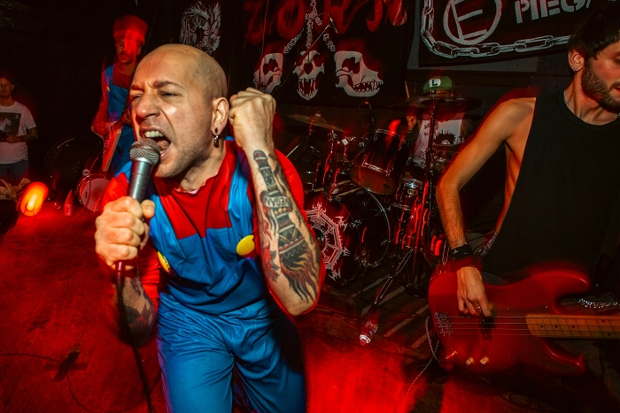
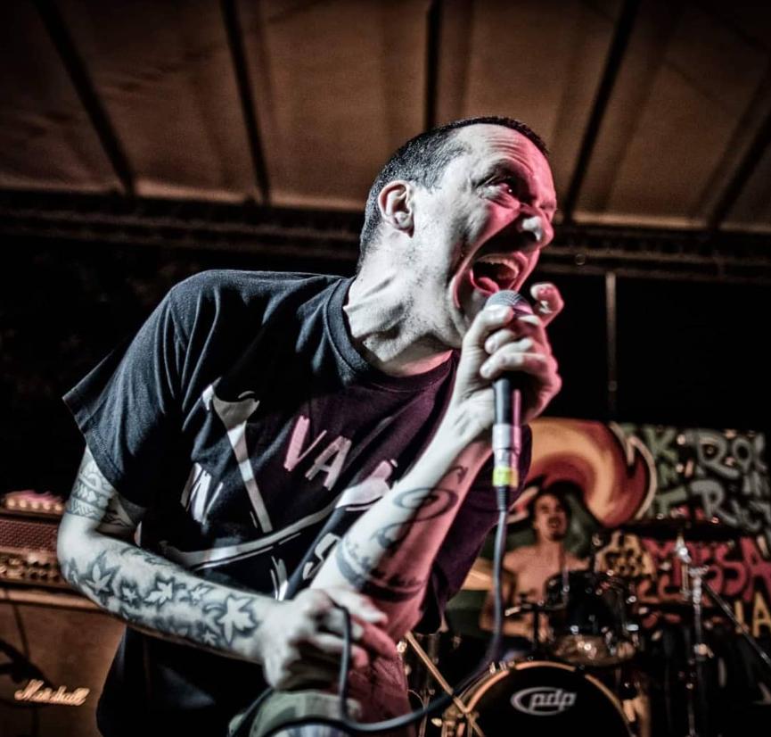

Ivan (Voce)
All'anagrafe Ivan Bolognesi, oltre alla sua attività con gli Skruigners, Ivan ha collaborato con altre formazioni punk, come "Gli Inutili", dove ha condiviso il palco con musicisti come Mattia Lovatti al basso. È noto per il suo impegno nella scena punk italiana e per la sua presenza sui social media, dove si definisce "Macchinista a tempo pieno, voce Skruigners quando ci saranno ancora idee realizzabili, sognatore-realista".
Tadzio (Chitarra)
Originario di Trento, Tadzio pederzolli si è trasferito a Milano nel 2004, dove ha approfondito la sua passione per la musica e la gastronomia. Si unisce agli Skruigners nel 2005 per sostituire il breve chitarrista Lorenzo, oggi è frontman dei Golpe. Oltre alla musica, Tadzio è uno chef vegano appassionato. Ha creato piatti che reinterpretano la cucina italiana in chiave vegana, guadagnandosi una reputazione come influencer culinario. Gestisce un ristorante a Milano e organizza corsi di cucina pop-up, condividendo le sue ricette innovative sui social media.
Mattia (Basso)
Mattia Lovatti, si è unito agli Skruigners nel 2004, in seguito allo scioglimento della band ha preso parte insieme ad Ivan al progetto degli "Inutili". Oggi è ancora attivo, infatti è bassista della band "I secoli bui" insieme a suo figlio Edoardo, che è il batterista ed il suo amico Claudio alla chitarra.

Carlame (Batteria)
Carlame è insieme ad Ivan il fondatore della band, è oggi il più famoso dei 4 componenti inquanto è fondatore e frontman della band Discomostro. Dal 2012 in oltre fa parte della band "Laforcah". Dal 2023 è anche un cantante solista, che combina le sue diverse influenze musicali per creare un suono innovativo e personale.
Album